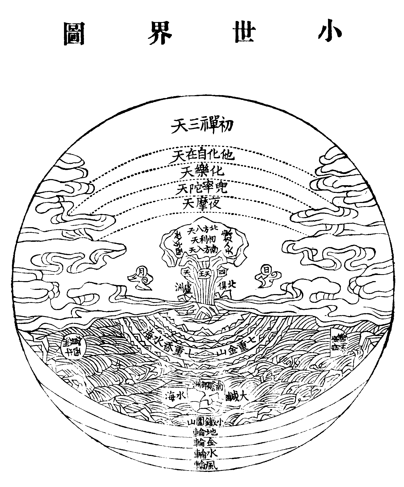
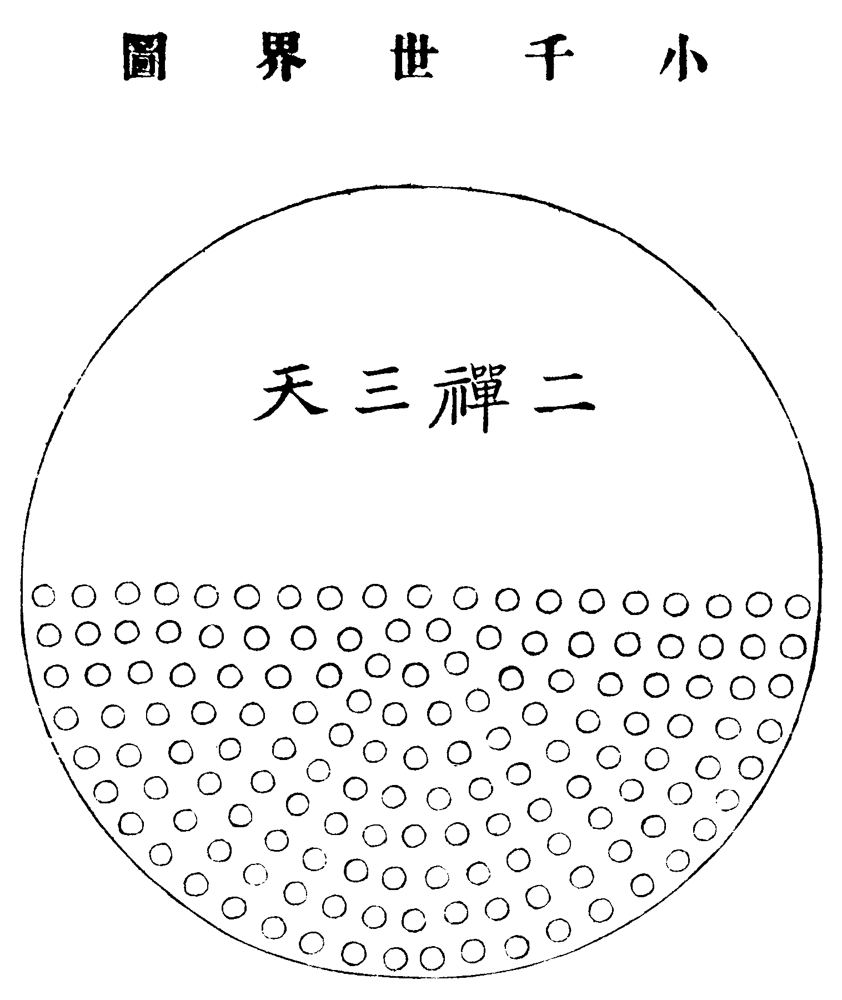
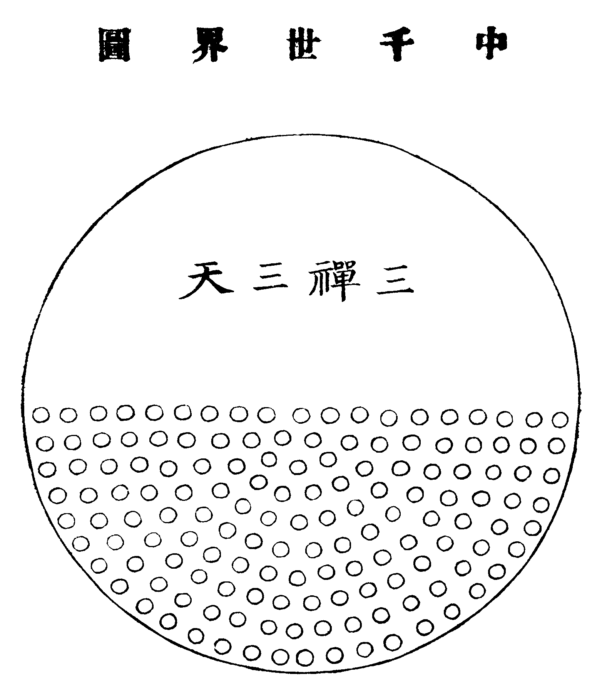
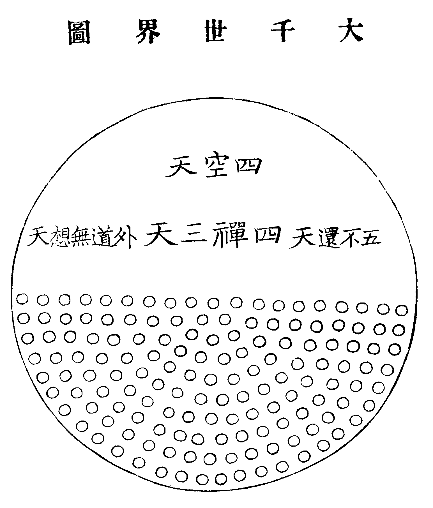
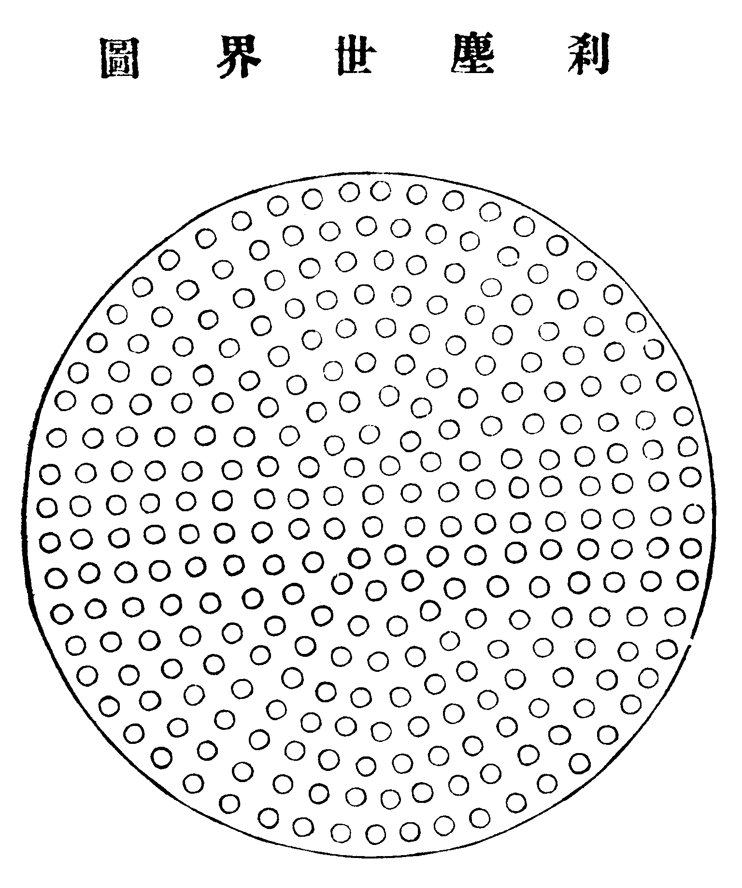
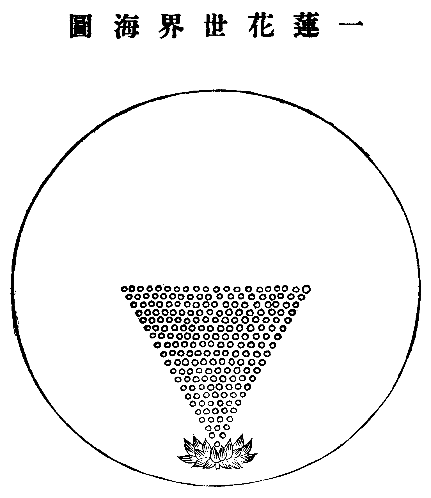
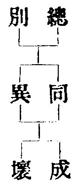

卍新纂大日本續藏經 第62冊
No.1193 蓮邦消息 (1卷)
【清 妙空子述】
第 1 卷
真心本體。清淨圓明。不屬一邊。全該萬法。乃以無始一念。忽起無明。遂於清淨本然。現出虗空大地。譬如燈中有鏡。鏡中有燈。六道四生。重重無盡。諸聖諸凡。普同出世。回環映現。化度不休。遠矣哉。人之生也。十月血腥。三年乳濁。從一世。及多生。緣影為心。四大為身。生死死生。形神流轉。莫補江心之漏。空增夢裏之哀。苦樂千般。恩仇萬變。分明因果。當局全迷。可深嘆也。此書層層解說。剝去粗庸。脉脉深涵。出生眾妙。歸家一路。導我前行。九品之文。顯出往生淨土異方便矣。諸善女人。兼眾檀施。刊刻流布。回此功德。利益有情。同生安樂。淨土圓現。娑婆頓空。佛國為家。蓮花在足。光明鏡影。無有纖痕。莫更遷流。致生種種。
同治十年冬妙空子書於百城煙水之居
蓮邦消息目次
No. 1193
蓮邦消息
性相光明品第一
諸仁者。夙昔有緣。同來聽法。將宣妙義。先淨其心。身口安詳。無諸亂動。當運心中信慧香花。專伸供養。十方賢聖。共展靈音。切莫等閒。以為容易。
顯現自在力 為說微妙機 無量諸眾生
悉受西方記 十方三世佛 阿彌陀第一
九品度眾生 威德無窮極
佛力無邊。即今人人會念南無阿彌陀佛。善哉善哉。南無阿彌陀佛六箇字。諸人可解乎。南無。歸命也。阿者。無也。彌陀者。量也。佛者。光明覺也。阿彌陀佛。乃是人人心中無量光明。諸仁者。汝等皆從無量光明中來。將來決定還歸無量光明中去。汝等自思。即今身心。在於何處。與此無量光明。是合是離。是一是二。
當知本性光明。原無邊際。運運不隔。彌陀現前。特因無始。一念不覺。頓起無明。流轉生死。故不見耳。故釋迦佛。於此娑婆。示現初成正覺。從空現有。說法度生。
剎剎塵塵。各標淨穢。無邊因果。起落重重。我等所居之娑婆。本師釋迦。今方滅度。無佛可見也。在此娑婆之外。向西而去。十萬億佛土。其剎名曰極樂世界。現在有佛。名阿彌陀。在其中說法。
經云。彼佛光明無量。照十方國。無所障礙。是故號為阿彌陀。既照十方國土。必不棄此娑婆。既具無量光明。必有多多靈感。故一稱其名。即得往生。受其教化。
眾生心中佛。佛心中眾生。譬如兩鏡交融。光明不異。光中現影。萬影一光。所以今日之人。不論老小賢愚。喜極則稱阿彌陀佛。苦極則稱阿彌陀佛。觸事逢緣。皆此四字。以光明無有二也。
光明無二。身剎則多。欲出世界。豈可不知世界之相。世界初起。先結風輪。於虗空中。凝然而轉。是眾生業識所感也。風中起雲。雲中降雨。霈然洪注。風輪持之。風輪之中。生鐵圍山。一切大海。皆在山內。海之中間。有七金山。四面海中。生四大洲及各小洲。七金山內。又生香水海。香水海裏。生須彌山。須彌山腰。四面有埵。四天王所居。名為第一天也。日月環繞山腰而過。山頂寬平。四面各有天王八位。中央玉帝。統御諸天。名為三十三天。其實第二天也。此二天。地居天也。三夜摩天。四兜率天。五化樂天。六自在天。此等皆雲中居。總為欲界六天。有種非天。名曰修羅。有天之福。無天之德。從欲界天。下至地獄。畜生餓鬼。與人雜居。畜生餓鬼地獄。苦不可言。名三惡道。天人修羅。名三善道。皆分男女。睡眠財食。互生互殺。名欲界而已。上有色界。但是色身。全是男子。常居禪定。不用身口。如是色界。有四層。色界之上。便是空界天。亦有四層。
娑婆世界相 本住風輪毬 上有日月輪
照此山海洲 雲居地居天 上及於初禪
再推而再遠 一千一千千 千箇一千千
名為大千界 花嚴剎海深 映入無中外
小世界圖

四天王天第一。忉利天第二。名地居天。夜摩第三。兜率第四。化樂第五。他化第六。名雲居天。
初禪三層天。在欲界六天之上。梵眾天第七。梵輔天第八。大梵天第九。上從大梵。下至鐵圍。一箇風輪所持。名為小世界。
小千世界圖

每一小世界。縮為一點。如是一千箇小世界。有一箇二禪天統之。名為小千。小千即一千也。
中千世界圖

每一小千世界縮為一點。如是一千箇小千有一箇三禪天統之。名為中千。中千即二千也。
大千世界圖

每一中千世界。縮為一點。如是一千箇中千。有一箇四禪天統之。名為大千。大千即三千也。千箇千千。故曰三千 福生天第十六。福愛天第十七。廣果天第十八總名第四禪天。
剎塵世界圖

將此三千大千世界。碎為微塵。一一微塵。作一大千。名剎塵世界。此中世界之數極多。如是名一剎塵世界也。再加二箇三箇。即為二剎塵世界三剎塵世界。
一蓮花世界海圖

於花嚴法界無量蓮花中。一一皆現無量世界海。我等所居。在正中一蓮花。此花現二十重世界。第一層。一剎塵世界。第二層二剎塵世界。最上第二十層。有二十剎塵世界。娑婆極樂。在十三層世界正中。
我等所居一箇小世界。初成之時。第二禪天中光音天人。從空而下。各有神足。飛行自在。因食地肥。體重光滅。不能飛起。化為地上眾生。久之分為男女二相。地肥不生。乃生米穀。朝割暮生。無窮無盡。眾生貪起。乃有盈虗。割不再生。更起爭奪。因分田土。各自種之。立田主以統眾人。名剎帝利。即王類也。傳歷多王。有凡有聖。凡王駐地。聖王能飛輪行空。傳至淨飯王時。兄弟四人。各領國土。妃號摩耶夫人。其時釋迦如來。在兜率天宮內院。為補處菩薩。名曰護明。化為白象。入母口中。十月而生。名悉達太子。
賢劫千佛第四尊 初從兜率天宮降
化為白象入母口 從右脅出而始生
一手指天一指地 天上天下為獨尊
童子地中文武全 有輪王福而不受
指妃之腹而有孕 為父傳後即出家
六年苦行知全非 一念圓觀成正覺
大啟花嚴一乘教 阿含第二方等三
四說般若五法華 度生已畢自滅度
佛滅度後。一切大士。奉行佛法。以度含靈。禪教律三門。一一指歸心性。最後方便。名淨土法門。即是依阿彌陀經。念佛求生極樂也。此方彌勒龍華會。要等八百七十餘萬年。不若早生西方。親聞彌陀說法也。
此阿彌陀佛。光明無量。亦名無量光佛。壽命無量。亦名無量壽佛。光無量。示度生之多。壽無量。示度生之久也。世間萬法。分名立相。肉眼觀之。似有種種。慧眼觀之。但是無量光明耳。所以古人云。自性彌陀。恒常清淨。唯心淨土。無有封疆。
大根大器之人。才提此一句佛。當下洞然。無有疑惑。一切不滯。佛法都圓。則自性彌陀。惟心淨土。明明現在。盡十方世界。是自己本光。那有十萬億程途。但是一心不亂而已。若未了悟。生死方長。但將一句彌陀。勤勤憶念。念到一心不亂。忽然心花開明。佛境本來現成。方知一切全是自家。不是從人討得也。又有種人。不知悟法。以彼念佛有力。習氣漸漸輕鬆。如磨鏡輪。久而自亮。一心不亂。見佛往生。此是修行捷徑。妙能總三根而并度也。大光明中。日來月往。輾轉化度無窮矣。
一際光明照十方 巍巍不動法中王
無邊世界三災起 淨土高標七寶幢
彌陀光照本無邊 大地虗空及遠天
何處是人歸結處 青黃赤白紫金蓮
更無魔外與兵戈 一片光華顯佛陀
諸上善人同聚會 化禽天樂六時多
奇哉一念感西方 接引而生大吉祥
如此娑婆真熱惱 不如歸去便清涼
從光明中。說此極樂世界。一切智愚。皆當往生。如禪宗五派。(臨濟曹洞溈仰法眼雲門也。今但存臨濟曹洞二派)講家三派。(天台賢首慈恩也。天台立四教。賢首立五教。慈恩則專談相宗唯識而已)律家一派。及一切修行無專法之人。皆須各隨己力。念佛往生。映入九品。方能不退。不退者。不退於菩提也。非此光明一心乎。
背覺合塵品第二
大光明中。不假安排。一切圓滿。既迷本覺。即是無明。夫真空法體。光明常滿十方。眾生歷劫輪回。只為不知有佛耳。起無邊之暗。空生覺裏。寶失衣中。情才生。智已隔矣。若不於念佛上著倒。一切無有了期。古人云。入海算沙。徒知自困。又云。久處人天。惡業便起。嗚呼。況在三途乎。生生不靈。自絕聖路。最可哀也。生殺迭起。水火相爭。業報住還。鉤鎖不絕。真不知其何所止也。從一妄想。成殺盜婬。是為弊惡
(妄想)昏昏入夢認為真 便把閽人作主人
引起無邊生死事 番番出入賊來賓
(殺)相爭相殺幾時休 錯換頭顱更起仇
有意無心都是孽 將他性命作珍羞
(盜)晝夜忙忙不得閑 何時金玉積如山
人天坐處更番變 管庫財神又換斑
(婬)此身本是誤中來 又把風流引俗胎
自赴鐵床銅柱獄 紛紛習氣未能灰。
生前不覺。既屬可傷。死後輪回。何能自主。百年瞬息耳。至命終時。一生善惡。俱時現前。宿世今生一切冤對。悉難逃避。纖毫過失。孽鏡照之。一點魂靈。隨之而墮。縱善惡兩平之輩。鉤考未及之人。中有飄颻。七生七死。亦太苦矣。一經報定。無路轉身。生天上者。尚不免迷荒癡鈍之哀。入地獄者。孰能逃剝割烹煎之慘。人中碌碌。事不從心。畜類昏然。遞相吞噉。鬼則有無窮之苦趣。魔則逞狂醉之凶威。頃刻命終。泥犁有分。倐忽輪轉。不得停留。視此境界。無一非背覺合塵之報也。本性常覺。則海濶天空。般若無權。則網羅密布矣。哀哉大險。汝欲蹈之。譬如盲人。獨行荊棘林中。夜雨昏黑。無可問路。終竟喪身失命。落塹墮坑。衣破身傷。不知其處
(地獄)慘極心昏惡未消 長年受苦實難熬
千生萬死身形換 頃刻阿旁又試刀
(畜生)可憐生死不曾停 命賤身輕體不靈
猶欲爭強互婬殺 畜生心事太零星
(餓鬼)慘澹飄搖鬼趣哀 苦辛奔走役風雷
貧窮更受燒身報 幻影重重痛不回
(人道)人身幸得己非安 百歲須臾落死關
一點假銀充不去 半生辛苦更何堪
(修羅)人我相爭勝負臨 飛沙走石殺人心
修羅太苦酣征戰 魂夢匇匇刀箭林
(天道)十善頑修夢入天 精求秘訣作羣仙
未消結限離生死 無量精神總落邊。
如此六道七趣。昏昏無一可憑。不亦慘乎。歸家有路。慈母望汝甚切。眾生不孝。乃負其恩。愈逞其能。離宗更遠。把一尊阿彌陀佛。置之腦後。千靈萬聖。何能救你。
南北東西。高低淨穢。十方國土。無量眾生也。即眾生性中之別。現出佛性中之同。即佛心性之同。現出眾生之異。棄無邊海。認此一漚。真可哀也。
判成兩地真離隔 淨穢分途報各殊
不說往生方便事 誰從頂上出醍醐
彼土阿彌陀佛。時劫方長。此土釋迦世尊。早早滅度。眾生福薄。背覺合塵。故此釋迦。住世不久。穢土既苦。人命又促。所以折眾生也。淨土既樂。壽命又無量。所以攝眾生也(釋迦化身。生於此娑婆。一四天下。南贍部洲。五印度中迦毗羅國。其生之年。應此震旦國周昭王二十四年甲寅四月八日。至穆王五十二年壬申二月十五日。於拘尸那城外。娑羅雙樹間入涅槃。至漢明帝永平十一年。帝夢金人。項佩日光。飛行殿宇。遣使求於西域。乃得佛經像。及梵僧二人。來於東土。於鴻臚寺安奉之。後因改為白馬寺。諸經漸漸東來。三學迭興。淨土法門亦啟)。
昔慧遠大師。能依佛誠言。開淨土法門。教此方人。求生彼國。六時精進。三毒消亡。親見彌陀接引。破諸黑暗林。現此光明路。合塵之輩。從此離塵也。
病起則藥來。肚饑則飯熟。以塵掩覺。全覺是塵。以覺破塵。全塵是覺。其智者頓然悟入。知背覺之非。則在塵離塵。塵原不礙。故曰。六塵不惡。還同正覺也。花嚴經云。花藏世界所有塵。一一塵中見法界。誰為塵乎。誰為覺乎。
消息輪回品第三
人心欲求好。先當問自家。生死輪回。不過一場夢。你若不醒。十分酣睡。夢中入夢。何時了局。你若厭惡輪回。一念才空。輪回已破矣。雖然。說之甚易。證入則難蓋輪回有輪回之根。其根不拔。故無可下手。勉強下手。亦不中用。究竟是空忙。故當消息之矣。
消其習氣。息其妄想。何謂習氣。此乃自然而然。逢時觸境。不期發而自發。如病瘧人。雖不見其病。而病常在。隔一日。又寒熱森然矣。何謂妄想。此乃起心動念。自家不肯饒自家。一念才起。千思萬慮。引發不休。妄想如林。入中不出。內計眼耳鼻舌身意。外逐色聲香味觸法。鼓起一輪。高低任轉。欲進欲退。必不能中途自止。法相上勘不破。到處總是憧憧往來。故宜消之息之矣。消如水枯。息如火滅。水火不爭。一心常定。久而自出輪回矣。
菴門終日不曾開 塔上銅鈴送響來
勸爾不如閑暇好 寒冰熱火最堪哀
一夢邯鄲已自醒 夢中靈處豈常靈
秋風葉落蕭條甚 狂醉心思可暫停
下水船來勢更狂 忽然風逆且商量
世間多少乘除事 逼極能飛計更良
打落重重障礙 自然脫體清涼
可憐塵海更茫茫 障裏還生別障
圈子跳不出。大大的一跳就出了。他又另起一箇圈子。趁你手脚做不穩時。再來圈你。你決決的一跳。跳過永不入。他也不柰你何。只怕你所跳出之處。但出小圈。不出大圈。則消者不消。其水方長。息者不息。其火方大。則輪回不曾損動一毫也。有人嚇你。說圈子外更有圈子。有人騙你。說圈子裏本無圈子。人說的話。究竟不能脫你的苦。
明明白白地。解脫現前。你尚徘徊。不肯自信。何能妄冀他人。代你喫這箇苦。苦要自己喫也。既知是病。即便醫之。何能養虎貽患。
本來水月鏡中燈 又說光明透幾層
認影原來全不是 炎炎夏日自無冰
夢中一物不堪用 醒後追思也太愚
你是聰明伶俐漢 而今偏自學糊塗
不欺自己即心安 何處行人更有關
匹馬單刀多事極 不如長作臥龍閑
苦苦還生苦苦 鬆鬆便得鬆鬆
忽然心事轉玲瓏 仍舊天衣無縫
從今以後。不用在空中更著一條釘。空中著釘。必然墮落。自知其苦。即便捨之。用心求離。名為得法。
淨土因緣品第四
云何得路。路在心中。脫苦往生。非無方便。葢自性光明。本能照見萬法。無邊依正。頭緒分明。正為身心。依為世界。身心世界。總是一光。於此光中。念佛往生。是名無上方便。
處處幢幢風入定 層層樓閣寶含光
人心到此全無垢 盡是如來解脫香
八功德水映金沙 七寶池中九品花
禽鳥勸人勤念佛 六時天樂不喧譁
阿彌陀佛。左有觀音。右有勢至。黃金為地。百寶莊嚴。無有女人。無有魔外。無有地獄餓鬼畜生。無有修羅。但是人天兩道。一統佛化而已。
我佛金身常照耀 十方世界現光中
分明土土融成片 不染凡塵一點紅
四十八條成佛願 無邊功德利羣生
同歸極樂離諸苦 妙向無生現有生
四十八願內。有一願云。若有眾生。至心稱念我之名號。乃至十念。欲生我國。若不生者。我不作佛。可見人能信心精進。定得往生也。
此是橫超三界法 直從東土到西方
頓融三輩歸安樂 自有蓮花運運香
經云。不可以少善根福德因緣。得生彼國。可見一切功德。均屬微細。唯有念佛功德。其光明無量。不可思議也。此阿彌陀佛四字。一稱其名。滅八十萬億劫生死重罪。但在至誠。功德即勝。諸佛所說。真實不虗。脫苦良方。此為最捷。
不誦經文不坐禪 也無佛法與君傳
只將一句彌陀佛 用作西方淨土緣
念佛人皆有宿緣 從今更不落人天
勤勤引得心光發 九品蓮花必現前
諸仁者。十方各有佛土。而獨勸往西方者。何也。蓋西方極樂。是眾生願往之好地方。阿彌陀佛。是眾生願見之慈父母。一生其國。智慧即圓。神通即發。分身度世。與佛同遊。統一切眾生。到菩提彼岸。有無量之樂。故名極樂也。
極樂彌陀德大哉 清涼世界寶蓮臺
化禽晝夜音聲起 喚得人人心地開
本性真光。是即念之佛。體也。精進往生。是即佛之念。用也。當知無為是有為之體。故是念中之佛也。有為是無為之用。故是佛上之念也。因體立用。念力森森。攝用歸體。佛心寂寂。行人要體用兩得。方不孤負。自然合道。
且不必多說。總而言之。念佛是往生真因緣。往生是脫苦真境界。無此念佛因緣。何得往生脫苦。一切眾生。生也苦。老也苦。病也苦。死也苦。凡是苦境。無一不苦。愛別離苦。怨憎會苦。求不得苦。有如是種種之苦。可不念佛離之乎。
娑婆苦 娑婆苦 娑婆之苦誰能數
無窮升降逐風輪 插脚難憑多失所
出沒閻浮不可停 頭顱改變成今古
何不及早念彌陀 免此娑婆苦
諸仁者。細細思量。苦難盡述。既知娑婆之苦。當求彌陀淨土之樂。
西方樂 西方樂 西方之樂全無作
自然生起念佛心 風吹樹網成天樂
辟支聲聞入一乘 人天善道無三惡
何不及早念彌陀 領取西方樂
諸經說。念佛一法。為緊要法門。然利益甚多。約有十種。生前死後。皆大利益。
堪嘆世人。名聞利養。一世用心。不顧生死大事。便做得掀天動地。霎時過去。還如水上浮漚。奉勸大眾。莫更蹉跎也。吾今宣說蓮池大師偈語。汝等一心聽之。
一心不亂 隨其大小 九品往生
故知世人 無有一人 不堪念佛
若人富貴 受用現成 正好念佛
若人貧窮 家小累少 正好念佛
若人有子 宗祀得託 正好念佛
若人無子 孤身自由 正好念佛
若人子孝 安受供養 正好念佛
若人子逆 免生恩愛 正好念佛
若人無病 趁身康健 正好念佛
若人有病 切近無常 正好念佛
若人年老 光景無多 正好念佛
若人年少 精神清利 正好念佛
若人處閒 心無事擾 正好念佛
若人處忙 忙處偷閒 正好念佛
若人出家 逍遙物外 正好念佛
若人在家 知是火宅 正好念佛
若人聰明 通曉淨土 正好念佛
若人愚魯 別無所能 正好念佛
若人持律 律是佛制 正好念佛
若人看經 經是佛說 正好念佛
若人參禪 禪是佛心 正好念佛
若人悟道 悟須佛證 正好念佛
普勸諸人。火急念佛。九品往生。花開見佛。見佛聞法。究竟成佛。始知自心。本來是佛。
念佛人。以極樂為家。解脫無邊境界。天上人間。莫比其樂。以念為因。以佛為緣。以念佛為因。以往生為緣。因緣相契。淨土成焉。如以艾取火。中用圓水精。火自曰中而來降。艾即眾生也。日即佛也。水精即念也。火生艾上。即是彌陀接引之相。
精進無虧品第五
大眾。既知西方極樂。娑婆極苦。自當及早。出離火宅。依法花經說。此娑婆界。猶如火宅。不可久居。幼子嬉遊。不知迴避。長者有智。乃以羊車鹿車牛車。引之令出。汝今速出。我當與汝如是三車。子既出已。向父乞車。長者乃以無量莊嚴。造大白牛車。令此諸子。平等受用。三車是上中下根。大白牛車。入佛一乘。更無同異也。下根自度。羅漢之類。中根一半度人。一半度己。出無佛世。名為獨覺。出有佛世。名為緣覺。上根度盡眾生為量。菩薩一類。會之歸一。入佛知見。更無三等之別。如阿彌陀佛。現大圓鏡智。但一寂光。無有二土也。然開一為三。亦用方便。更不執一乘之同。如彌陀淨土。於一種蓮花。現作九品也。寂光一乘。不離三乘。三乘往生。不離一乘。不離一乘。故純用念佛一法。不離三乘。故佛現九品蓮花。九即是三。三即是一。入佛知見。更無餘事。故念佛人。必須精進。求佛境界。常空其心。不令有著。念起即佛。他事不留。應緣而已。此一佛名。不念到家。終不歇手。故一心四字。四字一心。拆也不開。合之無迹。亦不是合。本非二也。亦復非一。亦非不一。如是念佛。如是一心。是真精進。
七日中用心。勇猛精進也。於早晚功課回向發願用心。恒常精進也。若花嚴法界。頓悟圓融。即頓即圓。非生非佛。總十界而為一。混三身而同空。一句彌陀。更無餘事。縱橫情量。破盡無餘。則最勝矣。古人云。
無邊剎海海涵空 海空便現蓮花宮
蓮宮周遍遍空海 空海獨露彌陀容
此法界無礙圓融。乃無邊精進也。無邊精進者。即此現前一念之佛。一佛之念。非總非別。非同非異。非成非壞。亦總亦別。亦同亦異。亦成亦壞。
其圖云。

隨舉一法。六法皆全。無礙圓融。思之可見(此六相。有比譬。在宗鏡錄上。今試仿其說。譬如人之一身。是總相也。頭腹手足。則別相也。頭腹手足皆是身。則同相也。頭且不是腹足且不是手。則異相也。頭目手足。聚而為一身。則成相也。頭高而腹[(白-日+田)/廾]。手足各分其左右。散而各住於自位。則壞相也。壞者離也。成者合也。異者非也。同者是也。別者偏也。總者全也。舉一身之頭目手足以為言。則總別同異成壞。一時而全現萬法皆然矣)又復即此現前一念之佛。一佛之念。即真即[糸-八]。真[糸-八]無覓處。其圖云。
隨舉一[糸-八]。十[糸-八]皆具。亦無礙圓融。思之可見。(此十[糸-八]在花嚴疏鈔中有十種名。五教儀及長者論。亦更標之。今酌書於十字之後。第一海字。是同時具足相應門。第二鏡字。是廣狹無礙自在門。第三金字。是諸法相即自在門。第四燈字。是一多相容不同門。第五月字。是秘密雙融隱現門。第六瓶字。是微細相容安立門。第七珠字。是光影交參涉入門。第八拳字。是託事顯法生解門。第九夢字。是十世隔法異成門。第十星字。是主伴圓融具德門)無邊精進。非有分別東西淨穢之心。非無顯現生佛往來之事。法法如是。心心如是。視兩土猶微塵。依一真如昨夢。上上根種。能救下下人。不滯中中。原非上下。此無邊精進。我先讚之。
一佛彌陀全法界 琉璃影事現虗空
東方西土原無礙 發得蓮花十倍紅
此恒常精進。我亦讚之。
依真而住心常妙 用法皆靈佛有神
莫把光陰空過了 蓮花國裏轉音輪
此勇猛精進。我終讚之。
大體圓融非晝夜 一心直往有光明
聲聲逼得蓮花放 那復輪迴起不平
精進從音聲入。六根之中。耳最虗靈。舌根運出。耳根運入。非舌非耳。即出即入。棱嚴云。由是意銷。庶乎其可以銷意也。意地清而六根淨。故曰。都攝六根。淨念相繼。其聽音之法。三種精進中。皆可行之。其事已畢。其時方閒。其地不煩。其身無苦。可置一圓几。於小室之中。繞而念佛。三帀繞之。音滿一室矣。即置此身心於聲音中而念之。久而音中。神光圓聚。即置此身心於光明中而念之。
鏡裏音聲聽更圓 無邊蓮萼一時鮮
精神脈脈何終始 那復東西見大千
如此用心。臨命終時。如鏡光收物影。物影入鏡光。非入非收。自然映現。
定慧相隨品第六
一切佛清涼妙法。以戒為先。戒者止也。止惡行善。止世間善。行出世間善。止麤善。行妙善。善之妙也。心常超過一切境界。神光不動。萬法皆閒。名之曰定。心常照見一切境界。神用不測。萬法皆靈。名之曰慧。定中不知有慧。慧月常圓。慧中不說有定。定光常住。其中道理。有淺有深。
昔大勢至菩薩。在棱嚴會上。自述圓通境界。乃是以念佛心。入無生忍。念時是定。入時是慧。入無生忍後。攝念佛人。歸於淨土。念而入是定。攝而歸是慧。此是一人之定慧。念佛三昧為定。觀其音聲即得解脫為慧。此又兩菩薩共一定慧也。佛用兩菩薩以成熟眾生。自身凝睟是定。十方化往上善全臨是慧。此又交錯而為定慧也。
念佛之人。既然修行。先要明理。若於君臣父子夫婦朋友兄弟五倫。多諸敗德。則定慧之種已傷。不能往生淨土。
念佛之人。既然修行。先要得路。若一味入種種邪教。背佛忘親。託說升天見鬼。此人死後。必墮無疑。定慧之路既差。不能往生淨土。
念佛之人。既然修行。不可泛泛。若又念釋迦本師。又念藥師琉璃。又念寶髻如來。以為放生。又念毗盧遮那。以為是花嚴主佛。頭頭不了。賬賬不清。一佛既無感通。千佛何從救汝。騎雙頭馬。踏兩頭船。定慧之功既非。不能往生淨土。
念佛之人。既然修行。不可夾襍。又要拜懺。又要拜經。又要持呪。又要看經。又要苦行朝山。又要閉關入定。又要長坐不睡。又要辟穀離人。又要多集事緣。又要高居名相。打算既熟。心光全昏。才落一機。便墮生死。可知道。念佛為正。諸行為助。不知主客。認奴為郎。斷無出頭之路。苦哉大險。一死一生。何了局也。定慧之力既分。不能往生淨土。
念佛之人。既要修行。不可太過。慈則纏縛。忍則無情。全非佛心。有何正念。要使物來順應。事過即空。亦不宜深入山林。昏昏死於一法。亦不宜雜然塵俗。擾擾無有出期。單入一邊。終成墮落。定慧之性偏枯。不能往生淨土。
念佛之人。既然修行。必先離障。凡生平。一人之不捨。一物之不忘。一事之留神。一端之抱憾。到了命終。總要分神。神既分了。念何能圓。念既不圓。佛何能應。定慧之用不靈。不能往生淨土。
念佛之人。既然修行。不可落空。若不發願。難成淨土。願既發了。早晚要熟習其願。每晨昏拜佛。頭至地必至誠祝云。弟子某人。一心求生極樂世界。如是願願相接。煖氣不斷。與佛常親。自然得手。必不可神光離合。或行或止。使無上寶願。轉落空亡。是為至要。若忘失了。即昏散矣。定慧之功有虧。不能往生淨土。
念佛之人。既然修行。於本參一句。不可忽略。此阿彌陀佛四字。乃是我救命金剛寶劍。若是工夫有進退。不能打成一片。躭圖順習。流入死生。一念才非。全身悉墮。古人用心。則不如是。除喫飯睡寤。這一句都是炯炯現前。無斷無續。乃至喫飯睡寤時。亦是此一句炯炯現前。則大妙矣。或疑。睡著無夢。這一句還現前否。曰現。問何以知其現。曰汝在何處睡。曰我睡床上。曰。汝早不能現前也。著衣喫飯。皆在阿彌陀佛大光明中。不曾咬著一粒米。不曾挂著一條絲。只為生死事大。不能半路歇手。汝却見床不見佛。哀哉。定慧之境不純。不能往生淨土。
念佛之人。既是修行。便要去疑惑。一者疑人。說他未必生淨土。空空勸人。未足信也。二者疑法。說修行不易。深大法門。尚難成佛。何況匇匇世上凡人。念了四箇字。望此大大好處。不足信也。三者疑已。看世上人。固不同樣。有去有不去。但我此一身。妄影既多。功夫又淺。塵勞難歇。悟境全無。焉能指望。佛恩雖寬。不度下劣。我且下種。姑待來生。強說生西。我不信也。如此三疑。自戕真種。蓮花未茂。自起猛風。可惜哉。定慧之運不超。不能往生淨土。
念佛之人。既要修行。當破盡情量。一切儒道諸家之說。勿存留作解。自礙真光。於禪淨異同。亦雙雙打落。單留一念。四字才圓。若作禪之五宗。教之三派。律之持犯。淨之偏圓。太作是非。橫分高下。一真既掩。九品皆空。哀哉輪回。再受無窮之厄矣。上上下下。隨分得之。度人度己。能行即行。既不可忘。亦不可執。悲光智力。不少不多。自有往生消息也。若見時了了。行時昏昏。說得分明。修得勉強。四字提不起。六道必長居。定慧之心未消。不能往生淨土。
是故定慧。常於有心處習之。常於無心處得之。有心處無心。則習之純矣。無心處能用其心。則非死水矣。死水不藏龍。真際中。圓圓不隔。方為了事。
念念現前品第七
果肯用心。一真自現。彌陀淨土。豈在遠乎。迷此別求。哀哉永劫。昔皇甫士坊。作淨土十二時頌。詞旨老實。感動人心。今誦之。以警諸仁者。
平旦寅。常時佛課在凌晨。一刻工夫十聲號。能超生死出沈淪。希有法。妙難論。往生全以信為因。君能信受無疑惑。便是多生授記人。
日出卯。朝露易晞人易老。試將親友細思量。眼前多少埋荒草。要修行。須及早。一寸光陰無價寶。閒時不肯念彌陀。只待臨終空懊惱。
日高辰。人世遷居必擇鄰。莫向人天求福報。壽終難免再沈淪。生忉利。作轉輪。暫時快樂未為真。勸君念佛求西去。永作逍遙自在人。
禺中巳。食時處處炊煙起。自餐飽飯自充飢。自己修持了生死。子憶母。母憶子。到底工夫全在己。棄捨身心見願王。十萬餘程近如咫。
日南午。佛日當空目不覩。一條直路少人行。反向長途受辛苦。不談禪。不揮麈。念念彌陀常作主。雖然身未出娑婆。棲神已在蓮花土。
日昳未。六蛇共室真堪畏。出沒閻浮是幾遭。多生還不分涇渭。猛回頭。滌塵胃。人命無常須不諱。死字常將挂在眉。纔覺西方有滋味。
晡時申。歎息人身似轉輪。此身不向今生度。更向何生度此身。休錯過。莫因循。幾多帶角與披鱗。千佛慈悲難救度。塵沙劫數自沈淪。
日落酉。返照餘光不長久。堪笑愚人顧目前。死生大事君知否。臭錢財。閒茶酒。賺得凡夫終日走。波波不暇念彌陀。日月到來空束手。
黃昏戌。一盞孤燈明夜室。上床別了韈和鞋。魂夢冥冥黑如漆。嘆人身。容易失。要出輪回須念佛。無邊罪障一時消。佛光皎似千輪日。
人定亥。富貴功名不常在。枕上黃梁夢未醒。癡情猶自憂千載。略因循。成懈怠。一息不來窮劫悔。孤負西方老願王。遙垂金臂恩如海。
夜半子。淨穢相形分彼此。不是娑婆苦折磨。誰肯灰心厭生死。既厭離。要知止。黃金地上樂無比。眼前煩惱為誰來。都是西方促裝使。
鷄鳴丑。君欲往生誰掣肘。煩惱場中正好修。念佛須教心應口。離是非。無可否。凡事隨緣我何有。但看蓮花不陸生。結根偏在泥中藕。
此十二時頌。所說雖粗。可以啟發。古人云。諸人被十二時辰使。老僧使得十二時。果然十二時中。念念用心。處處憶佛。雖不能使十二時。亦不為十二時辰使矣。但念念工夫。必生效驗。不貪效驗。方是工夫。切不可以念念現前為自足。葢正念所結理事二種好境界。皆是幻果。不可貪其味。才生一念。即墮落有期。彼外道魔王。純乎以境界為事。為佛弟子。求生極樂。轉轉落境。即是謗三寶也。念念之功。須於一切時一切處用心。空空靈靈。久而自應。蓋用心非用。方能契真。此心一真。即是念佛心性。於心性上現出一句佛。才是真佛。不然。動靜都成境界。念佛總不能達邊到底。如棒擊水。何異不擊乎。如刀割水。何殊不割乎。有事而無功。是為癡人。無事而有功。方為智者。雖然。無事不妨有事。方是真無事也。方是念佛心性也。若起心動念而求無事。乃多事極矣。
虎鬥龍爭勢已平 江天風靜月華清
聞君欲覓還鄉訣 認取涼宵念佛聲
何以念念之功。要從耳根起。蓋人止六根。而眼鼻身三根太拙。功德不全。依法花經。唯耳舌意三根。最為圓快。是故入手從此三者起。此三之中。意根是心之幾。念佛之念。依他而現。既現於意。乃運舌而出聲。舌意二根。勞久則倦。無有入路。仍有退機。必用耳以聽之。耳主神明出入。略一注之。意根即空靈宛轉。不落動靜。舌根任他高低運用。全不拘束他。微風吹動。則念佛自然。如天樂鳴空。雲中雁語。風鈴在塔。鼓角依更。我不責之鳴。而任其自鳴。斯可以得其大意矣。大意既得。再細研之。
靜觀煩惱成瓔珞 多用音聲作管絃
何處天涯方擾擾 半空明月已將圓
細之又細。我不知之。諸仁者。當自知。勿著痕跡。
勸君休辨淺和深 離念須臾得好音
十面風聲齊入化 定中消息比眠琴
雖然。未足以盡其妙也。
絃外音聲聽更清 本來塵世即無生
雁鴻影落江波上 非有非無畫不成
又有觀想念佛一門。從有生滅中。一轉而入無生滅性。蓋此有生滅。全依不生滅者起。故一轉即回頭也。其中二法最要。一者。直觀丈六彌陀。立池水上。二者。專想彌陀眉間白毫也。白毫八稜。中空色白。右旋五轉。散作無邊光。徧攝羣生。歸於淨土。此白毫觀成。入路最捷。注想兩眉中間。久之自然顯現。但觀想所引之境。亦從心性中來。故作觀持名。皆得稱為念佛矣。若強役妄心。揑成幻相。邪觀既發。魔境乃生。不可救也。
一佛當令 千魔退聽 何以能之 此心不病
所以十六觀經云。諸佛如來。是法界身。入一切眾生心想中。汝等心想佛時。此身即是三十二相八十種好。是心作佛。是心是佛。作佛乃言體上之用。是佛乃言用上之體。一切佛法。本來現成。借觀而現。現於自心。非造作而後有也。
無作之作 作而不作 無是無非 佛佛靈機
不明法界之全。休談觀想。未悟棱嚴之旨。莫學禪那。修行美名。必不可貪。修行好相。必不可取。不牽名相。便是知音。
往生入位品第八
時候已到。自己須知。錯過機關。千生難遇。既然時時回向西方。步步求生淨土。佛心感動。小示光儀。偶生一念之粗。即障無邊之妙。如此之病。病者不知。世無醫人。能醫此病。當於一切處用心。妙遇真宗。平常接待。則無事矣。無事則現前無障。空空任現。運運常靈。時至往生。更無疑惑。病是何事。而汝憂之。當早捨身。心。專一待死。死即往生。非待非不待。乃為好手。
稽首西方安樂國 接引眾生大導師
我今發願願往生 唯願慈悲哀攝受
弟子普為四恩三有。法界眾生。求於諸佛一乘。無上菩提道故。專心持念。阿彌陀佛。萬德洪名。期生淨土。又以業重福輕。障深慧淺。染心易熾。淨德難成。今於佛前。翹勤五體。披瀝一心。投誠懺悔。我及眾生。曠劫以來。迷本淨心。縱貪瞋癡。染穢三業。無量無邊。所作罪垢。無量無邊。所結冤業。願悉消滅。從於今日。立深誓願。遠離惡法。誓不更造。勤修聖道。誓不退墮。誓成正覺。誓度眾生。阿彌陀佛。以慈悲願力。當證知我。當哀愍我。當加被我。願禪觀之中。夢寐之際。得見阿彌陀佛。金色之身。得歷阿彌陀佛。寶嚴之土。得蒙阿彌陀佛。甘露灌頂。光明照身。手摩我頭。衣覆我體。使我宿障自除。善根增長。疾空煩惱。頓破無明。圓覺妙心。廓然開悟。寂光真境。常得現前。至於臨欲命終。預知時至。身無一切病苦厄難。心無一切貪戀迷惑。諸根悅豫。正念分明。捨報安詳。如入禪定。阿彌陀佛。與觀音勢至。諸聖賢眾。放光接引。垂手提攜。樓閣幢幡。異香天樂。西方聖境。昭示目前。令諸眾生。見者聞者。歡喜感歎。發菩提心。我於爾時。乘金剛臺。隨從佛後。如彈指頃。生極樂國。七寶池內。勝蓮花中。花開見佛。見諸菩薩。聞妙法音。獲無生忍。於須臾間。承事諸佛親蒙授記。得授記已。三身四智。五眼六通。無量百千陀羅尼門。一切功德。皆悉成就。然後不違安養。回入娑婆。分身無數。徧十方剎。以不可思議自在神力。種種方便。度脫眾生。咸令離染。還得淨心。同生西方。入不退地。如此大願。世界無盡。眾生無盡。業及煩惱。一切無盡。我願無盡。願今禮佛發願。修持功德。回施有情。四恩總報。三有齊資。法界眾生。同圓種智。
他之文句。悉包全部花嚴。不誤眾生。可以遵奉。日日功課。宜體會之。得此靈熏。運運成就。
作家手筆也尋常 演出蓮花自在香
莫道修行無規矩 依他所說便清涼
但要字字句句懂得。層層折折想到。真心全量。探喉而出。一徧願文。可抵十年修。不用心者。於此願文。昏昏忽過。空受菩薩戒。枉作修行人。生死現前。隨風而倒。
(中有者。已死而未入六道之身)。
既落中有。豈得往生。十个九人。往往如此。哀哉大險。切勿蹈之。
凌空一步最安詳 心現蓮花便吉祥
莫道其中無九品 本來舉念即西方
到此工夫。禪定中捨身。定起即是生西方。西方起故東方不起。此所謂東方入定西方起。非死生也。但入定與出定。即此一念。光陰太峻快耳。
寶地經行空外影 玉樓宴坐定中身
紛紛幻果齊消落 唯有清涼寶願輪
平時發願之因。此時結成果。非著意。非不著意。雙涵並照。不動步而到。佛亦來迎。我亦往生。翛然間暇。乃真上品。
若論依法。法亦多般。若論從心。心只一个。棱伽云。智不得有無。而興大悲心。此菩薩往生境界也。眾生擾擾。根器各殊。九品既分。一言難盡。
上品上生者 圓具三種心 誠心及深心
回向發願心 佛身來接引 彈指即往生
坐於金剛臺 凝然而入位
上品中生 求佛妙法 於第一義 心不驚動
紫金臺上 經宿花開 不退菩提 飛行自在
上品下生 發無上心 五百佛身 一齊授手
經一晝夜 金蓮花開 七日之中 見佛聞法
下品上生 多造惡業 聞經名字 及淨土因
化佛來迎 罪滅往生 獨有觀音 先為說法
下品下生 十惡五逆 命終遇救 十分心真
花如日輪 飛空來接 應念而往 精進乃超
蓮花雖有九品。升降但從一心。莫滯其機。居然得路。雲開月現。春至花香。悉入真宗。齊成妙遇。
身土圓融品第九
身心世界。四種皆一光明無量而已。光中身心安。光中世界淨。如水鏡照物。雖一切皆現。而浺瀜無有物也。佛觀一切眾生身心世界。但是一道清虗。眾生念佛。當以佛之心為心。也要將身心世界。看得一道清虗。方能入佛知見。
兩鏡光中絕點塵 佛身還以佛為鄰
心心交映無終始 剎海圓融寫一真
佛以法為身。是第一身。念此佛者。生寂光淨土。從法身上現出修行而成報身。是第二身。念此佛者。生實報莊嚴淨土。從報身自受用上。開出他受用身。是第二身影子。亦名應身。念此佛者。生方便有餘淨土。從報身上。現出大小種種諸化身。是第三身。念此佛者。生凡聖同居淨土。此乃竪說。須不見相而橫竪渾融。乃為真佛真念也。
如此乃是淨土中分別淨土。土異身異。必待融而後融也。若知四土一心。一心四土。乃土融矣。然融淨而不融穢。非真融也。四身一體。一體四身。乃身融矣。然融極聖而不融一切聖凡。非真融也。至於觸境皆融。聖凡無二。花嚴三昧之身土。消息可商。此種境界。即佛也。
身身互映全無作 剎剎玲瓏不見痕
一切求之無可見 不妨法法普成門
一切聖身。四聖如一。一切凡聖。九品如一。一切十方凡聖。皆現目前。自觀己身與十方身。彼彼此此。即彼即此。非彼非此。土與土融。亦復如是。此種境界。即佛也。
花藏世界所有塵 一一塵中見法界
身界二塵皆如是 圓成一境普清涼
一切身一切土莫不融。一切身一土莫不融。一身一切土莫不融。一身一土。莫不皆融。此中境界。即佛也。
情與無情皆佛道 況乎生佛本圓融
智光不動無終始 十面回環即主公
一切身中身。不礙剎。一切剎中剎。不礙身。一切剎中身。不礙身剎。一切身中剎。不礙剎身。此中境界。即佛也。
交參涉入無通塞 海印重重普發光
那有語言及文字 逢時且作法中王
一無礙。一切無礙。放出現千千。一切無礙。一無礙。收來無一一。此中境界。即佛也。
表裏玲瓏絕有無 十分情量破無餘
生平艶羨陶朱富 那識衣珠自足娛
無礙與無礙全無礙。無礙與有礙全無礙。有礙與無礙全無礙。有礙與有礙全無礙。雖一个全無礙。而不廢有。無。亦有無。非有無。四句。此中境界。即佛也。
一毫不動常如此 萬變紛紜事若何
靜臥已消無量劫 更無情緒說多羅
埽礙者亦應埽無礙。立無礙者還同立礙。埽立一時。光明具足。有琴無絃。妙音常發。
諸仁者。我今不惜眉毛拖地。為汝指示。中人之質。須勤看彌陀疏鈔及棱嚴經。兼及棱伽法花金剛圓覺維摩等。則一乘佛境界之根本立。而淨土已圓頓現前矣。從稜嚴之有規矩。入花嚴之神明於規矩。如風無礙。如月出雲。如鏡寫燈。如珠映網。層層密密。不漏一絲。不挂一絲。神遊法界。任運而念佛。自然踏得著這一步。
漫說牢牲籃蛤猶關坡老情痛癢同吾性匕箸皆生命(若令眾生生歡喜者則令一切如來歡喜) 供養取羶腥喉嚨逕寸縱不持齋食肉依三淨(不見殺。不聞殺不為自己殺) 勸君殺業因緣總戒清。
竊玉摸金我輩原無者樣心李下冠休整馬待錢方飲 (合目冥心子細聽)但取色和聲塵根不淨宿債須償豈肯饒分寸 勸君盜業因緣總戒清。
未斷情根輪轉三途不出塵魔眷隱形影戒體非乾淨(一切眾生皆住法性三昧切莫因慧而傷定) 何況是邪婬更當猛省忍此須臾血氣登時定 勸君婬業因緣總戒清。
隨口縱橫字字都非肝肺生說鬼憑誰證有虎驚人聽 一語不天真千言難信誑習交欺千古成通病(有慨乎其言之) 勸君妄語因緣總戒清。
覆雨翻雲播弄人間事不成骨肉還滋釁道路都含憤 試問甚心情揣摩難準(求則得之)拔舌泥犁(地獄也)恐有斯人分 勸君兩舌因緣總戒清。
無愛無憎耳畔何來此惡聲盛怒尋瑕釁穢語施閨壺 張口殺機生言言太忍不見山膏善罵無人性(山膏獸名善罵出苦山見山海經) 勸君惡口因緣總戒清。
(思也。風也。氣也。幻也。夢也。決定也。巧毒也。因便也。恍惚也。因循也。庸愚隨順也 又曰。說到使君自有婦。羅敷自有夫。與花嚴離垢之旨。同一森嚴矣。說到生靈皆赤子。乃使人恭敬慈悲之意。油然而生 又曰。孟子言嫂溺援之以手而已。今增滿其意。乃曰生靈皆赤子。恭敬好相扶。嗚呼。由是意銷。威光特違矣)。
右婬。
言必由衷如本分重輕入脈無淆移宮換羽逞奸刁青蠅移白黑雙管也難描 惡報身形何定準有無多舌滔滔都因反覆業難消誤人成熟路(何必)衡量失心標(多舌者增之報。無舌者滅之報。法界無增減。而欲增減焉。故自受之矣)。
右兩舌。
善氣從容成脉理一言能鎮河山蓮修芬馥吐三三妙音成解脫何處著粗頑(是極) 抵突剛強兼毒穢性情如隔千關無端赤舌更何堪音聲難入聽消息(婉而多諷)請君參(化曰。口出蓮香。尚非究竟。幾人參透。口過免矣夫)。
右惡口。
一理分明成境界本來表裏相當光明心事總無妨從心流妄語威德損心王(可知道) 縱使三緘無口過心風念動聲揚靈靈啟告遍諸方精神成恍惚(仔細)無盡意言殃 (淨曰。念動則有風。風起則有聲 又曰。念必有境。境皆成文。故是詞句矣 又曰。意動則有言現於心。雖未沖喉而出。早得謂之意言。入普賢機。善用心聞。知一切眾生心中念。念中語)。
右妄言。
曲折玲瓏心太巧風情旖旎含羞傳神最近粉骷髏空言成實境世世女為儔 花果紛紛生後報沈酣豔妒嬌愁可憐一落便千秋聰明偏帶綺(誤事多矣)禪話尚風流 (慧曰。不是風流不是禪。請君下語 又曰。潘荀一輩。久墮女身。擲果移花。多成罪案。故有報也 又曰。此世受報。為花報。泥犁受報為果報。隔一世為生報。歷多生為後報也)。
右綺語。
不淨居心難獨脫自然神墮天涯只知可愛便依他到頭依不住空自誤歸家 客路千岐多刃蜜豈徒辛苦交加圓中無限現尖叉爛泥防有刺(且欵欵)莫更醉流霞(潤曰。我真欲去。蓋心知幻樂之無多也)。
右貪。
風火無端爭欲發飛傷功德叢林從容道韻有知音眾生皆劇苦何不且沈吟(平心之論) 消落心兵成慧用不煩鑄氣為金休因失意便昏沈 勸君觀法界(恢之彌廣)何古復何今(真曰師心幸為無量也)。
右瞋。
從古修行多誤事更無一法當胸(是極)瞥生知見轉盲聾天然消息在自塞妄求通(可憐可恨) 外道邪魔根緒幻(天下)本來識鏡同空(本無事庸人自擾之)天堂地獄影重重(花嚴妙悟何處根塵)十方微動處猛聽一聲鐘(密曰弟子慚愧)。
右癡。
放逸居心曾不檢番番戕賊生靈凡軀慧命一時傾無(從心起而身口肯之故十惡具矣)心身與口有意愛和嗔(細析精研) 豈必自家成故誤積冤多在因循破除性相乃能拼無邊生死窟累劫墮何能 (愛則貪。食肉寢皮而殺之。或因愛彼而殺此 積冤多在因循。陽宦陰官。聞此皆當猛醒。非徒血食一端也 修曰。破除一任破除。還是拙破好巧破好。盡情破好。不盡情破好。試定當看)。
右殺。
隨分光陰安命了何煩著意求多乘除損益鏡中過(一笑)私心增積聚對物總消磨 高下各爭名與利暗明強弱殊科丘山芥子報無訛(空了故苦不空故苦)水流花落盡罰重慘如何(贊曰。更有一種人於修行二字上偷心反覆死不盡)。
右盜。
慚愧從來都聖德身形愛欲原(請君仔細看)粗念生心境即糢糊菩提煩惱樣顛倒畫葫蘆(恥) 別具風流成罪相(怪哉)鈎深況及無辜使君終莫念羅敷(請看定盤星)生靈皆赤子(善哉)恭敬好相扶 (這一鉤可拍 靈曰。粗字下得切 一曰。顛倒葫蘆。寫盡交爭之致。嗚呼。菩提煩惱。一耶。二耶 通曰。別具二字。銜得十方世界。天條。王法。陰刑 護曰。別則各異。具則皆同 又曰。別別繫縛。別別解脫。婬之途正復無涯也。或以男誤女。或以女誤男。或以男誤男。或以女誤女。或以非男之人誤女。此五種婬是可指著。至於精神遞互。交雜離奇。則有不可思議者。以要言之。一念之疎。顛倒無邊也 俊曰。此風流罪相。入佛鏡中。一覽無餘 又曰。鉤深二字。寫盡心肝。鉤有多種。聲也。色也。明也。暗也。態也。情也。勢也。財也。獨也。眾也。身也。口也文也。影也。影也。畫也。香也。衣也。言也。笑也。故事也。小說也。新聞也。戲齣也。眼也。手也。神也)膩旨妍音舌底波瀾欠老成直與俳優等易動纖兒聽(威光何在) 下筆盡婬聲未刪衛鄭描寫風流最是才人病 勸君綺語因緣總戒清。
日夜經營為此區區血肉身氣與金銀競力為妻拏罄 尋丈數先盈還爭尺寸谿壑難填(貪因可好而生)何者心纔稱 勸君貪業因緣總戒清(心無盡則好亦無盡)。
怒氣填膺匣裏龍泉似欲鳴一念天和損六道修羅近 煩惱本無城莫迷心性人我雙忘萬事如灰冷 勸君嗔業因緣總戒清。
一味無明便作凡夫(三惑皆從無明起)了一生根器休嫌鈍(因果微妙)因果先當信(真信是誰) 智慧屬天成何修何證心鏡孤懸不蓄纖毫影 勸君癡業因緣總戒清。